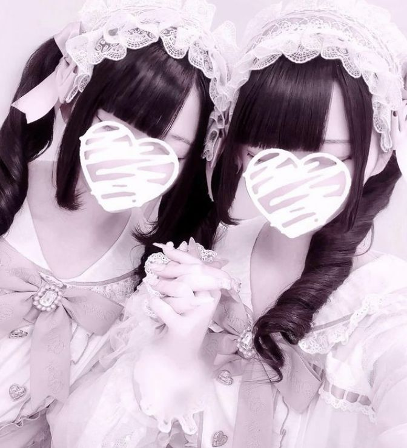
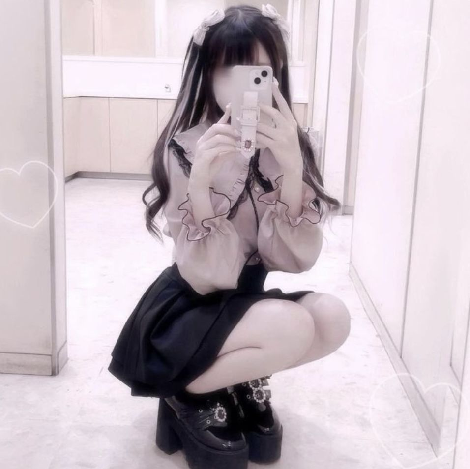

Ресангата - это японский термин, обозначающий тенденции быстрой моды, которые в настоящее время настолько популярны, что все выглядят одинаково. Поскольку он основан на современных тенденциях, то, что называется Ресангата, постоянно меняется и не относится к определенному типу моды.
Ресангата (量産型) означает "тип массового производства" и используется для описания основных тенденций моды, которые носит значительная часть населения. Это слово часто используется в уничижительной манере для описания старшеклассников и студентов высших учебных заведений, которые следят за тенденциями и поэтому одеваются одинаково, что делает их похожими на изделия массового производства на фабрике.
 